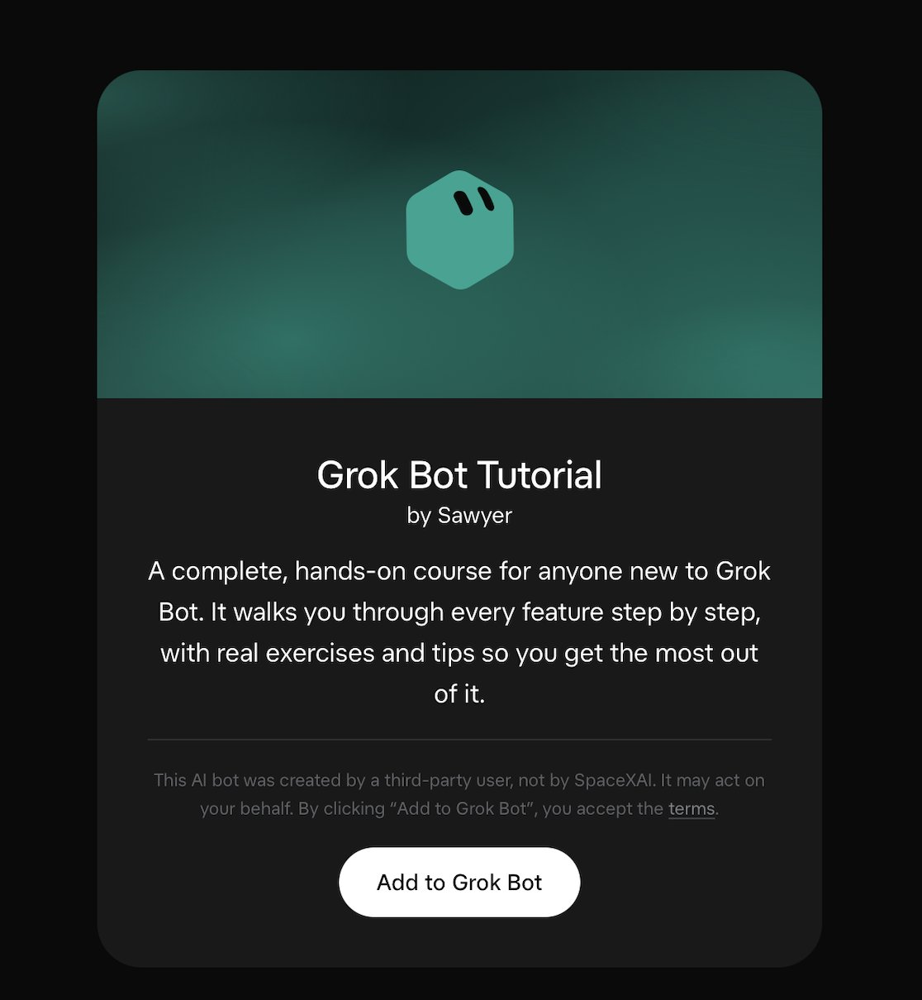

Post links · 6/8
I've created a new Grok Bot Tutorial template for anyone new to Grok @…
@SawyerMerritt · Sawyer Merritt · Sat Sep 26 01:55:52 +0000 2026
I've created a new Grok Bot (xAI's AI assistant that comes with its own computer) Tutorial template for anyone new to Grok @Bot.
This hands-on course includes 20 lessons. It walks you through every feature step by step, with real exercises and tips so you get the most out of Grok Bot.
Download: https://t.co/Nyf5muUF23
The 20 lessons:
1) Talking to your assistant
2) Files, images, and voice
3) Research & writing
4) Connecting your apps
5) Calendar and scheduling
6) My own computer & browser
7) Working on your own computer
8) Routines
9) Staying in control
10) Privacy and security
11) Memory (facts the bot keeps between chats) and preferences
12) Skills
13) Showing it how to do something
14) A team of assistants
15) Sharing and templates
16) Customizing, and fixing things
17) Using it for your job or business
18) Travel and everyday errands
19) Money and finances
20) Buying things for you

Link card: this post points to a course or video. Only text and metadata are kept here.
Source: https://x.com/SawyerMerritt/status/2103664821459685708